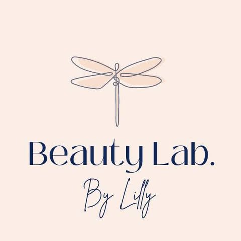
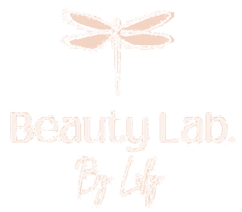
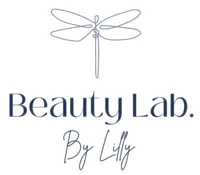

Your logo, kept as it is.
The dragonfly drawn in one fine line, the navy “Beauty Lab.” and the “By Lilly” script are already a lovely, recognizable mark, so the demo uses your own logo. The only changes: the blush box behind it is removed so it sits cleanly on any background, and the three parts are set side by side for the website header, where the stacked version would be too small to read on a phone.
Your current logo

From your Facebook page (480 × 480 pixels).
Used on the demo site
 On white
On white


 Horizontal lockup for the header
Horizontal lockup for the header
Beauty Lab. By Lilly, ready for the web

Dark version
One colorBrowser icon at 64, 32 and 16 px
Kept
- Your dragonfly line drawing and peach wings
- Your navy wordmark and its lettering
- Your “By Lilly” script
- Your colors, exactly
Changed
- Blush background removed
- A side-by-side version for the header
- A simple dragonfly browser icon, since the fine line disappears at 16 pixels